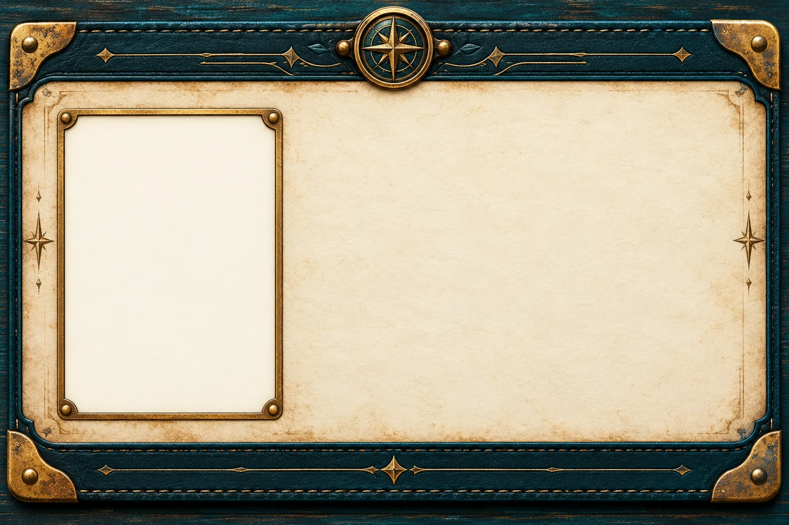
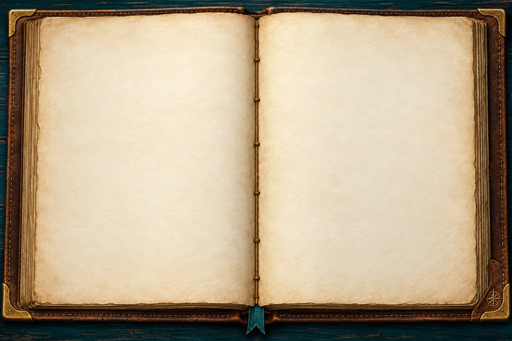

Start a new Starters attempt? This will clear this version’s answers and drawing on this device.
01 / Tiko’s invitation
Watch Tiko. Then be yourself.
Watch the short video. You can replay it.
Download Tiko’s video✦
Your place in the team
Both parts are your homework: your ID card and Listening Quest. Read both aloud when you finish.
02 / Your expedition identity
My ID Card

My jobChoose below
Draw yourself on the card, or use your initials.
Choose one job
Tap a speaker to hear a word.

MY EXPEDITION JOURNAL
Introduce yourself
WORDS FOR MY INTRODUCTION
My word bank
Sentence starters
Write in your own diary. Your teacher checks your English.
03 / Listening Quest
Your expedition record
Your work stays in this browser. Print or save a PDF to share it with your teacher.